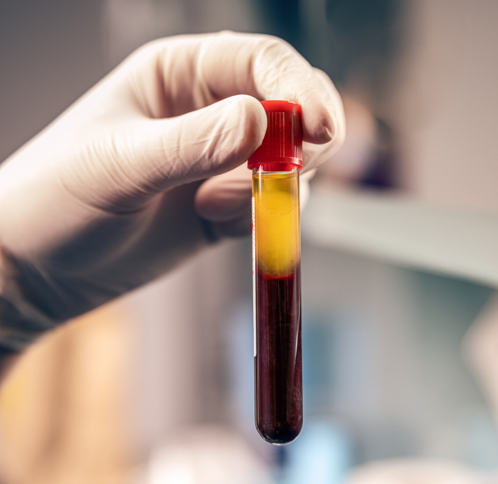
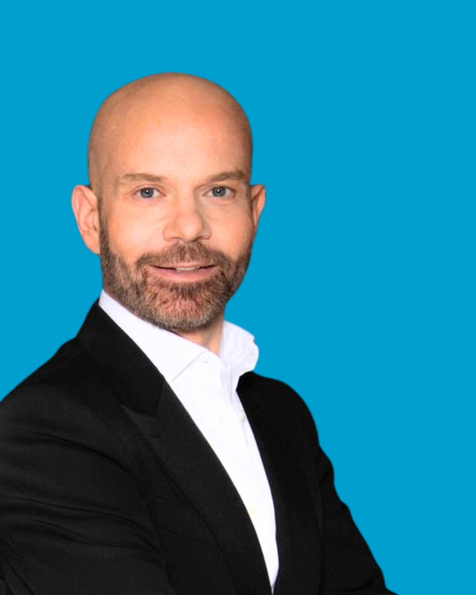

Nuovo servizio
Gentile paziente,
siamo felici di annunciarti che da oggi allo Studio Bonaccorso è attivo Bonaccorso Lab, il nostro laboratorio analisi. Puoi fare prelievi e analisi del sangue direttamente in studio, nello stesso luogo in cui segui il tuo percorso di cura, senza doverti spostare da una struttura all'altra.
Con Bonaccorso Lab abbiamo voluto unire in un unico posto tre momenti che di solito restano separati: l'esame, il risultato e la sua lettura insieme al medico. Ogni valore diventa così un'informazione utile per costruire, passo dopo passo, un percorso davvero su misura per te.
In medicina funzionale gli esami del sangue sono il punto di partenza. Il sintomo non è un problema isolato, ma un segnale: per capirne le cause dobbiamo guardare a come funziona l'organismo nel suo insieme. Molti squilibri, come un'infiammazione cronica di basso grado, un'alterazione del metabolismo o un aumento del rischio cardiovascolare, possono restare silenziosi per anni. Misurarli per tempo ci permette di intervenire prima, con strategie mirate di prevenzione, nutrizione e terapia.
I servizi di Bonaccorso Lab
Bonaccorso Lab offre sia gli esami di base per il controllo periodico della salute, sia pannelli più avanzati dedicati alla longevità e alla prevenzione. Ecco nel dettaglio le quattro aree principali.
Gli esami ematochimici sono la base di ogni check-up: ci dicono come stanno funzionando gli organi principali, il metabolismo e il sistema ormonale. In studio puoi eseguire gli esami di routine e i check-up completi, oltre ai profili ormonali e tiroidei, fondamentali per chi segue percorsi con ormoni bioidentici o di nutrizione ormonale.
La longevità non significa solo vivere più a lungo, ma vivere più a lungo in salute. I prelievi della longevità sono pannelli avanzati che valutano i marcatori legati ai processi di invecchiamento cellulare, organico, cerebrale, muscolo-scheletrico e cutaneo. Ci aiutano a capire a che punto è il tuo organismo e quali aree hanno bisogno di attenzione, per impostare un piano di prevenzione personalizzato.
L'infiammazione è una difesa naturale dell'organismo; quando però diventa cronica e silenziosa, la cosiddetta low-grade inflammation, può contribuire nel tempo all'invecchiamento e a molti disturbi. Le citochine sono le molecole con cui le cellule del sistema immunitario comunicano tra loro: dosarle, insieme agli altri marcatori dell'infiammazione, permette di individuare uno stato infiammatorio anche quando non dà ancora sintomi evidenti.
La salute del cuore e dei vasi sanguigni si protegge soprattutto con la prevenzione. Oltre al colesterolo totale, un profilo lipidico avanzato e i marcatori del rischio cardiovascolare offrono un quadro molto più preciso, utile per intervenire con alimentazione, stile di vita e, se necessario, terapie mirate.
Gli esami da eseguire vengono sempre scelti dal medico in base alla storia clinica e agli obiettivi di ciascun paziente.
Come funziona
Prenota il prelievo online o per telefono. Al momento della prenotazione ti spieghiamo come prepararti.
Il prelievo si svolge in studio, in un ambiente riservato e accogliente, con personale qualificato.
Il medico ti spiega i risultati e li integra nel tuo percorso di prevenzione e cura.
Domande frequenti

«Conoscere i propri valori è il primo passo per prendersi cura di sé nel tempo. Con Bonaccorso Lab possiamo farlo insieme, in un unico luogo.»
Dott. Michele BonaccorsoMedico funzionale e della longevità